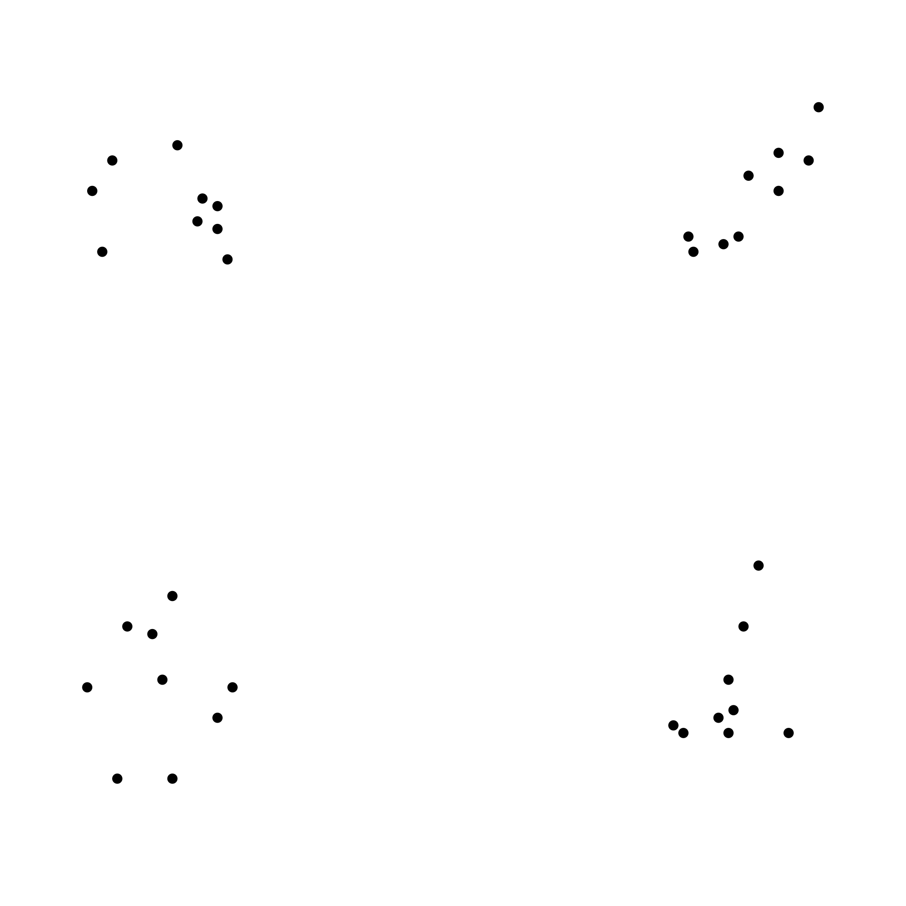

<!DOCTYPE html>
<html>
<head>
    <title>Dot Pattern Similarity Task</title>
    <script src="https://unpkg.com/jspsych@7.3.4"></script>
    <script src="https://unpkg.com/@jspsych/plugin-canvas-keyboard-response@1.1.3"></script>
    <script src="https://unpkg.com/@jspsych/plugin-html-slider-response@1.1.3"></script>
    <script src="https://unpkg.com/@jspsych/plugin-instructions@1.1.3"></script>
    <link href="https://unpkg.com/jspsych@7.3.4/css/jspsych.css" rel="stylesheet" type="text/css"></link>
    
    
    
    <style>
        .jspsych-btn { margin: 5px; }
        .jspsych-content-wrapper {
            margin-top: 5px; /* Adjust the top margin as needed */
            margin-bottom: 5px; /* Adjust the bottom margin as needed */
        }
        .jspsych-canvas-keyboard-response-stimulus {
            margin-bottom: 5px; /* Space between the canvas and the prompt */
        }
        .jspsych-canvas-keyboard-response-wrapper {
            margin-bottom: 5px; /* Space between the canvas and the prompt */
        }
        .jspsych-html-slider-response-wrapper {
            margin-top: 0px; /* Adjust if there is a slider and you want to reduce the space above it */
        }
        .jspsych-content {
            padding: 10px; /* Reduced padding around content */
        }
    </style>
    
</head>
<body></body>

<script>
    
    const CANVAS_WIDTH = 550; // Global variable for canvas width
    const CANVAS_HEIGHT = 300; // Global variable for canvas height
    
    document.addEventListener('DOMContentLoaded', function() {
        const jsPsych = initJsPsych({
            on_trial_finish: function() {
                var trial_data = jsPsych.data.get().last(1);
                console.log(trial_data.csv());
            },
            on_finish: function() {
                jsPsych.data.get().localSave('csv', 'similarity_ratings.csv');
            }
        });
        
        function drawPattern(context, pattern, xOffset, canvasWidth, canvasHeight) {
            const dotSize = 1.0; // Size of the dots
            const patternScale = 2.5; // Increased scale for larger patterns
            
            // Adjust the scale and centering based on the new requirements
            const scale = Math.min(canvasWidth , canvasHeight) / 45; // Adjust scale for larger patterns
            const centerX = xOffset + (canvasWidth / 2) +10  // Shift patterns to the right for centering
            const centerY = canvasHeight / 2;
            
            pattern.forEach(dot => {
                context.beginPath();
                
                const x = (dot.x * scale) + centerX - (canvasWidth * 0.25);
                const y = centerY - (dot.y * scale);
                context.arc(x, y, dotSize * patternScale, 0, 2 * Math.PI);
                context.fill();
            });
        }
        
        // Welcome page
        var welcome = {
            type: jsPsychInstructions,
            pages: [
            'Welcome to the Dot Pattern Similarity Task. <br><br> Press "Next" to continue.'
            ],
            show_clickable_nav: true
        };
        
        // Instructions page
        var instructions = {
            type: jsPsychInstructions,
            pages: [
            'In this task, you will be presented with pairs of dot patterns. <br><br>' +
            'Your job is to rate the similarity of each pair using the number keys on your keyboard. ' + 
            'Please press a key between 1 and 9 to indicate your rating, where 1 means "Not Similar" at all, ' +
            'and 9 means "Very Similar". You can use any number between 1 and 9 to provide a rating that best ' +
            'represents your perception of the similarity between the two patterns.<br><br>',
            'Examples of Dot Patterns that are highly similar: ' +
            '<br>' + 
            '</img>', 
            'Examples of Dot Patterns that are not similar: ' +
            '<br>' + 
            '</img>'
            ], 
            show_clickable_nav: true
        };
        
        
        function loadAndStartExperiment(callback) {
            var xhr = new XMLHttpRequest();
            xhr.open('GET', 'mc_patterns.json', true);
            xhr.onload = function() {
                if (xhr.status === 200) {
                    var json = JSON.parse(xhr.responseText);
                    var trials = createTrialsFromJson(json);
                    callback(trials); // Callback to continue with the trials
                } else {
                    console.error('There was a problem with the request.');
                }
            };
            xhr.send();
        }
        
        
        function loadAndStartExperiment(callback) {
            var xhr = new XMLHttpRequest();
            xhr.open('GET', 'mc_patterns.json', true);
            xhr.onload = function() {
                if (xhr.status === 200) {
                    var json = JSON.parse(xhr.responseText);
                    var trials = createTrialsFromJson(json);
                    if(callback) callback(trials); // Ensure callback is called with the trials
                } else {
                    console.error('There was a problem with the request.');
                }
            };
            xhr.send();
        }
        
        function createTrialsFromJson(json) {
            
            const trials = [];
            const keys = ['1','2','3','4','5','6','7','8','9']; // Allowed keys for response
            
            for (let i = 0; i < json.length; i += 3) {
                const patternSets = [
                [json[i], json[i + 1]],
                [json[i], json[i + 2]],
                [json[i + 1], json[i + 2]]
                ];
                
                patternSets.forEach(patternSet => {
                    const patterns = patternSet.map(trialData => {
                        return Array.from({length: 9}, (_, idx) => ({
                            x: trialData[`x${idx + 1}`],
                            y: trialData[`y${idx + 1}`]
                        }));
                    });
                    
                    trials.push({
                        type: jsPsychCanvasKeyboardResponse, // Use the Canvas Keyboard Response plugin
                        stimulus: function(c) {
                            let ctx = c.getContext('2d');
                            ctx.clearRect(0, 0, c.width, c.height);
                            const spacing = 80; // Space between patterns
                            const margin = 20; 
                            const patternWidth = (c.width - spacing - 2 * margin) / 2;
                            patterns.forEach((pattern, index) => {
                                const xOffset = margin + index * (patternWidth + spacing);
                                drawPattern(ctx, pattern, xOffset, c.width / patterns.length, c.height);
                            });
                        },
                        canvas_size: [CANVAS_WIDTH, CANVAS_HEIGHT],
                        choices: keys,
                        prompt: '<p>Rate the similarity of the patterns from 1-9 <br> (1=Not Similar, 9=Very Similar).</p>',
                        response_ends_trial: true,
                        data: {
                            pattern_1: JSON.stringify(patterns[0]),
                            pattern_2: JSON.stringify(patterns[1])
                        }
                    });
                });
            }
            return trials;
        }
        
        
        var fullTimeline = [welcome, instructions].concat(loadAndStartExperiment());
        
        
        loadAndStartExperiment(function(trials) {
            var fullTimeline = [welcome, instructions].concat(trials);
            jsPsych.run(fullTimeline);
        });
        
    });
</script>
</html>
